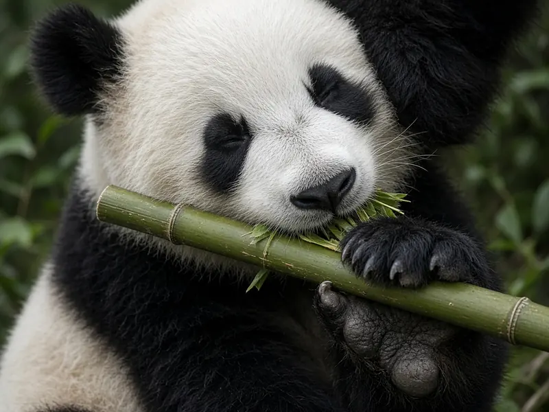

Why do giant pandas eat bamboo if they are carnivores?
Giant pandas eat bamboo even though they belong to the order Carnivora because, over millions of years, their ancestors shifted from a bear's mixed diet to an abundant, year round plant food. Their bodies only partly caught up. Pandas lost the ability to taste the savoury flavour of meat, but they kept a carnivore's gut and never gained strong cellulose digesting microbes, so they survive on bamboo mainly by eating huge amounts and spending remarkably little energy.

A bear in the order Carnivora
"Carnivore" can mean two things. In biology, Carnivora is an order of mammals that includes cats, dogs, weasels, seals and bears. In everyday speech, a carnivore is an animal that eats meat. The giant panda is a carnivore in the first sense, a true bear, but not in the second. As Zhao and colleagues put it in a 2010 paper in Molecular Biology and Evolution, the giant panda is a vegetarian with 99 percent of its diet being bamboo. Our giant panda profile covers the rest of its biology.
So the real question is not why a meat eater chooses plants, but why a member of a mostly meat eating group ended up specialising so completely in one plant, and how it copes with a food its body was never built for.
Clue one: pandas cannot taste umami
When the first giant panda genome was published in Nature in 2010, Li and colleagues reported that the panda's bamboo diet might depend more on its gut microbes than on its own genes. One striking detail was that Tas1r1, a gene for the umami taste receptor, appeared to be a pseudogene, a gene that no longer works. Umami is the rich, savoury taste of meat and many proteins.
Zhao, Yang, Xu and Zhang tested this directly. They sequenced all six exons of Tas1r1 in another giant panda and in five other carnivores. The gene was intact in every carnivore except the panda. By measuring how fast the panda's version had been collecting changes, they estimated that the pressure to keep the gene working relaxed about 4.2 million years ago, with a 95 percent confidence interval of 1.3 to 10 million years. That date matches the approximate timing of the panda's dietary switch suggested by fossils.
The authors do not claim that losing the gene caused the switch. Their interpretation is that pandas came to rely less on meat, which made umami taste unnecessary, and the broken gene then reinforced the plant diet because meat lost much of its appeal. They also note that cows and horses still have a working Tas1r1, so taste alone cannot explain why an animal becomes a herbivore.
Clue two: a carnivore's gut with the wrong microbes
Most plant eaters rely on specialised digestive systems and on gut bacteria that break down cellulose, the tough fibre in plant cell walls. The giant panda has neither. The Smithsonian's National Zoo notes that its digestive system is more similar to a carnivore's than a herbivore's, so much of what it eats passes through as waste.
In 2015, Xue and colleagues profiled the fecal microbes of 45 captive giant pandas across spring, summer and late autumn and published the results in mBio. Compared with 124 gut microbe profiles from 54 mammal species, panda gut communities had extremely low diversity and resembled those of carnivorous and omnivorous bears rather than other herbivores. Pandas lacked groups typical of plant eaters, such as Ruminococcaceae and Bacteroides, and were instead dominated by Escherichia/Shigella and Streptococcus. Their microbes also changed more between seasons than between individuals. The authors concluded that the panda appears not to have evolved a gut microbiota suited to its newer diet.
Clue three: an animal built to save energy
If you cannot digest your food well, one answer is to eat a lot of it. A giant panda eats from 70 to 100 pounds of bamboo each day, according to the Smithsonian; our article on how much bamboo a panda eats looks at the numbers in detail.
The other answer is to spend less. In a 2015 study in Science, Nie and colleagues measured daily energy expenditure in five captive and three wild giant pandas. The average was 5.2 megajoules a day, only 37.7 percent of the 13.8 megajoules expected for a mammal of that size. Wild pandas averaged 6.2 megajoules, or 45 percent of the expectation. Pandas achieve this partly through smaller vital organs and low physical activity. Their thyroid hormone levels were also low, and the team found a mutation in the DUOX2 gene, important for making thyroid hormones, that is unique to giant pandas and might explain why. The same tight energy budget is one reason pandas cannot fatten up and hibernate like other bears.
Why bamboo was worth it
Bamboo is poor food, but it has big advantages for an animal that can live on it. It grows in dense stands through the mountain forests of western China, it is available all year, and few other large animals compete for it. A bear that can process it does not need to hunt or wander far between seasonal foods. Pandas also evolved tools for the job, including powerful jaws and the bony "false thumb" that helps them grip stems, described in do pandas have thumbs?.
The cost is dependence. A species tied to one plant is vulnerable when bamboo forests are cleared or fragmented, which is why habitat protection has been central to the giant panda's recovery. The IUCN Red List now classes the giant panda as Vulnerable. For more on what both panda species eat, see our panda diet guide, and for daily life in the forest, our panda behaviour page.
The short answer
Giant pandas are carnivores by ancestry and herbivores by habit. Their ancestors moved toward bamboo millions of years ago, the umami taste gene stopped working along the way, and today pandas live on a food they digest poorly by eating huge amounts of it and running on an unusually low energy budget.
Frequently asked questions
Are giant pandas carnivores?
By family tree, yes. Giant pandas are bears, and bears sit in the order Carnivora. By diet, no. About 99 percent of what a giant panda eats is bamboo, so in everyday terms it lives like a herbivore (Zhao et al. 2010, Molecular Biology and Evolution).
Why can't giant pandas taste meat?
Their umami taste receptor gene, Tas1r1, is broken. Umami is the savoury taste of meat. Zhao and colleagues found the gene intact in five other carnivores but disrupted in the giant panda, and estimated it lost its function about 4.2 million years ago.
Can a giant panda digest bamboo well?
Not very well. It still has a digestive tract typical of carnivores, lacks its own genes for breaking down cellulose, and its gut microbes look more like those of other bears than those of cows or horses (Xue et al. 2015, mBio). Much of what it eats passes through as waste (Smithsonian's National Zoo).
How do pandas survive on such a poor diet?
Mostly by saving energy. Nie and colleagues measured daily energy use at only 37.7 percent of the value expected for a mammal of the same size, helped by small vital organs, low activity and low thyroid hormone levels (Nie et al. 2015, Science). They also eat a lot, from 70 to 100 pounds of bamboo a day.
Did losing the umami gene make pandas eat bamboo?
Probably not on its own. The authors suggest pandas first relied less on meat, which made the umami taste unnecessary, and the broken gene then made meat less tempting. Cows and horses still have a working Tas1r1, so other factors are involved too.
Sources
- Zhao, H., Yang, J. R., Xu, H. and Zhang, J. (2010), Pseudogenization of the umami taste receptor gene Tas1r1 in the giant panda coincided with its dietary switch to bamboo, Molecular Biology and Evolution 27(12): 2669 to 2673. DOI 10.1093/molbev/msq153
- Li, R., Fan, W., Tian, G., Zhu, H., He, L., Cai, J. et al. (2010), The sequence and de novo assembly of the giant panda genome, Nature 463(7279): 311 to 317. DOI 10.1038/nature08696
- Xue, Z., Zhang, W., Wang, L., Hou, R., Zhang, M., Fei, L. et al. (2015), The bamboo eating giant panda harbors a carnivore like gut microbiota, with excessive seasonal variations, mBio 6(3). DOI 10.1128/mBio.00022-15
- Nie et al. (2015), Exceptionally low daily energy expenditure in the bamboo eating giant panda, Science
- Smithsonian's National Zoo and Conservation Biology Institute: Giant panda
- IUCN Red List: Giant panda, Ailuropoda melanoleuca (2016 assessment)
Cite this page
APA
PandasWise. (2026, October 18). Why do giant pandas eat bamboo if they are carnivores? https://pandaswise.com/blog/why-do-pandas-eat-bamboo-if-they-are-carnivores.html
MLA
"Why do giant pandas eat bamboo if they are carnivores?" PandasWise, 18 Oct. 2026, https://pandaswise.com/blog/why-do-pandas-eat-bamboo-if-they-are-carnivores.html.
Chicago
PandasWise. "Why do giant pandas eat bamboo if they are carnivores?" PandasWise. October 18, 2026. https://pandaswise.com/blog/why-do-pandas-eat-bamboo-if-they-are-carnivores.html.